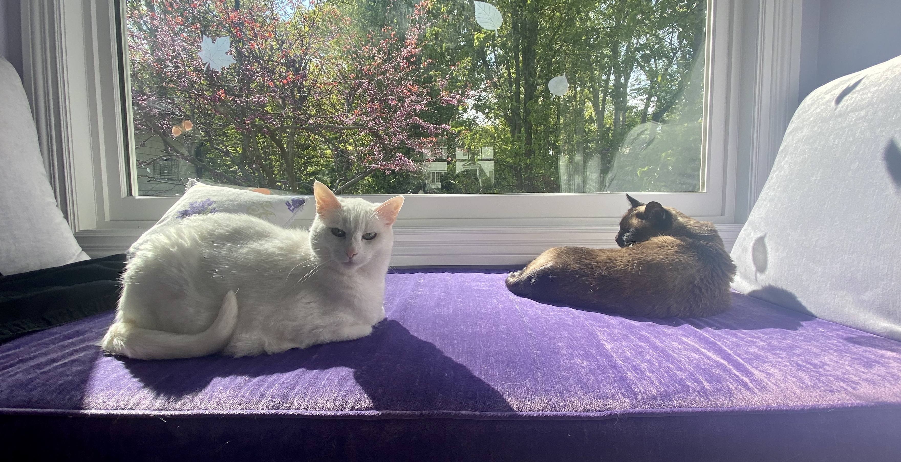

Cassandra Marcussen's Portfolio
Welcome to my portfolio!
About Me
I am a rising junior at Columbia University studying Mathematics and Computer Science with a focus on Intelligent Systems. I also play the cello!
I was first introduced to Computer Science in high school. I had joined the computer programming club with a friend, but was frustrated to find that we were the only girls in the club. We started a girls coding club, and through this club I led projects involving mobile app development, web development, and more. We launched an app on the Google Play Store called Under My Wing, which ended up winning the Verizon App Challenge!
Throughout college, my passion for Computer Science has persisted. Combined with my passion for mathematics, which developed in elementary school and has continued to blossom since, I have found a deep interest in Machine Learning and Artificial Intelligence. At Columbia, I take part in ML research with applications in clinical informatics. I am constantly seeking out ways to engage even further in the fields of CS, math, and AI/ML.
Learn more about me
For a more extensive overview of my learnings, challenges, and goals during the STEP Internship:
To access the portfolio sub-projects of the STEP Internship:
To learn more about my musical endeavors and other hobbies:
To find out some fun facts about me in an interactive format:
Links to My Work
A Photo of my Cats
For a couple of months now, I have been staying at home. Therefore, of course, I've had lots of time to take great photos of my pets! I am a cat person at heart, and you can frequently find me talking to my cats or feeding them cat treats. :)
Because of this, I want to share some photos of my cats on my homepage, as they have a special place in my heart and therefore deserve special recognition on this website!
Contact Me
I am best reached via email, at cassandramarcussencello@gmail.com.